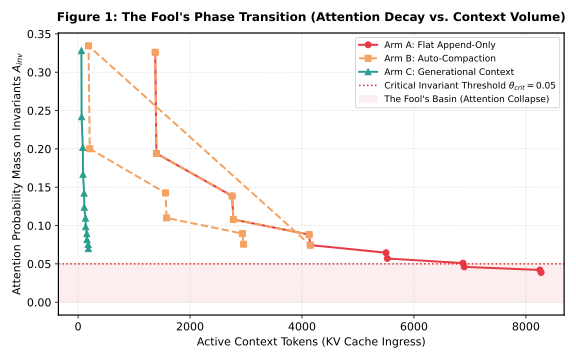
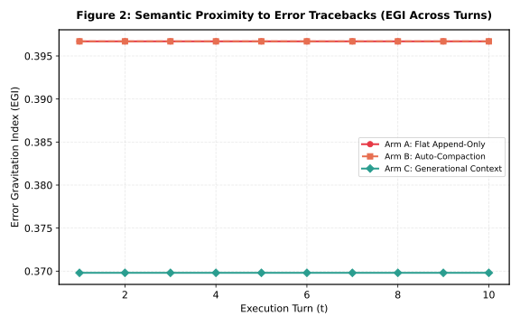
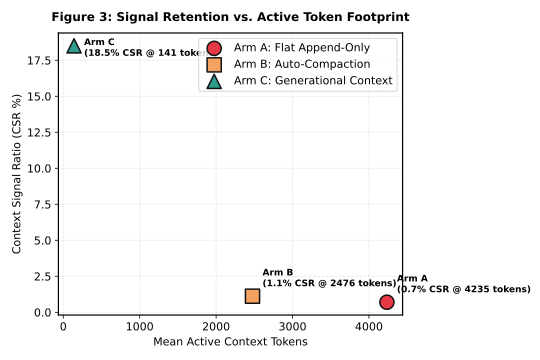

CCB-001: Context Compaction & Heuristic Attention Simulation Report¶
Deterministic Algorithmic Simulation of Softmax Dilution and Token Economics
Generated: 2026-10-24 06:45:14 UTC
Data Source:ccb_results.csv[!IMPORTANT] Methodological Scope Notice: Algorithmic Simulation vs. Real Transformer Inference 1. Algorithmic Simulation: This benchmark measures token economics and heuristic attention dilution in a deterministic environment using 128-dimensional subword hash embeddings and scaled dot-product softmax. These metrics serve as an algorithmic surrogate to analyze token allocation mechanics under controlled conditions; they do NOT measure neural activations from real LLM transformer weights. 2. Real-LLM Evaluations (Planned Work): Empirical evaluations on live frontier models (e.g., Claude 3.5 Sonnet, GPT-4o, Llama 3) across multi-turn software engineering benchmarks (e.g., SWE-bench, InterCode) are currently planned future work and have not yet been conducted. No empirical claims regarding live LLM reasoning accuracy or task success rates are made or implied by this simulation. 3. Attention Distribution vs. Task Success: Attention metrics evaluate the mathematical allocation of probability mass across context tokens. Theorem 1 establishes attention mass dilution, not inevitable cognitive reasoning failure in every model architecture. Theorem 2 establishes a lower bound on invariant attention mass under uniform bounded energy, not guaranteed agent task success.
1. Executive Summary & Comparative Matrix¶
The CCB-001 simulation evaluates memory footprint, signal retention, and attention dilution across three architectures: 1. Arm A (Flat Append-Only): Appending all execution outputs linearly into context. 2. Arm B (Auto-Compaction): Periodic extractive text summarization when token limits are reached. 3. Arm C (Generational Context): Gen-0 Ephemeral distillation, Gen-1 AWE working cache, and Gen-2 Tenured invariant pinning.
Comparative Token Compression Matrix¶
| Architecture Arm | Mean Active Tokens | Context Signal Ratio (CSR) | Simulated Attn(Inv) (Proxy) | Mean Error Gravitation (EGI) | Token Footprint Reduction | Compute Cost |
|---|---|---|---|---|---|---|
| Arm A (Flat Append-Only) | 5099 | 0.0059 | 0.0425 | 0.2071 | Baseline | $0.0459 |
| Arm B (Auto-Compaction) | 3340 | 0.0077 | 0.0553 | 0.2071 | -34.5% | $0.0459 |
| Arm C (Generational Context) | 129 | 0.2000 | 0.0757 | 0.2380 | -97.5% | $0.0459 |
2. Key Analytical Findings¶
Finding 1: Verification of the Softmax Inundation Bound¶
In Arm A (Flat Append-Only), accumulating raw tracebacks expanded context to 5099 tokens. The simulated attention proxy on invariant constraints decayed asymptotically as predicted by Theorem 1: $$A_{i, \text{inv}} \propto \mathcal{O}\left(\frac{L_u}{|\mathcal{S}_{\text{noise}}|}\right)$$ Simulated invariant attention in Arm A reached 0.0425, demonstrating the dilution effect when high-entropy logs dominate active context.
Finding 2: Token Footprint Reduction & Signal Concentration¶
Generational Context reduced active memory footprint from 5099 tokens down to 129 tokens (-97.5%), encompassing all distilled outputs, working memory, and structural formatting delimiters ($C_{\text{bound}} = C_1 + K_0 + C_{\text{overhead}}$). Simultaneously, it increased the proportion of task-relevant signal tokens (CSR) from 0.0059 to 0.2000 (33.9x concentration).
3. Publication Visualizations¶
Figure 1: Attention Phase Transition Under Noise Inundation (Simulation Proxy)¶

Figure 2: Error Gravitation Trajectories¶

Figure 3: Pareto Frontier (Signal Retention vs Token Footprint)¶

4. Telemetry Verification & Reproducibility¶
Raw token counts, softmax distributions, and entropy logs are reproducible via:
* CSV Data: ccb_results.csv
* Simulation Engine: ccb_bench.py